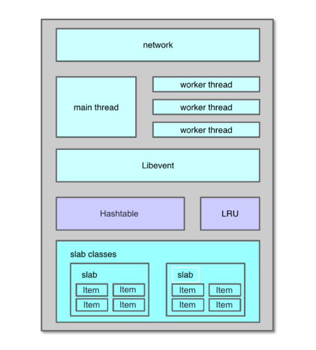
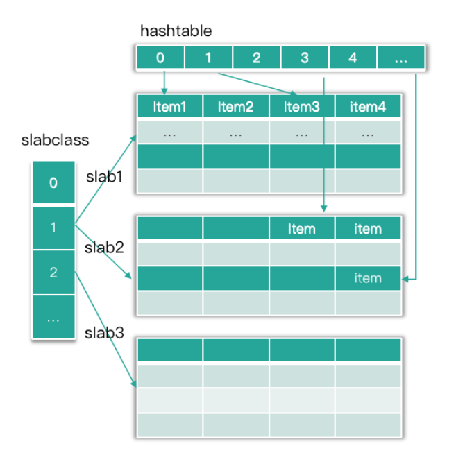
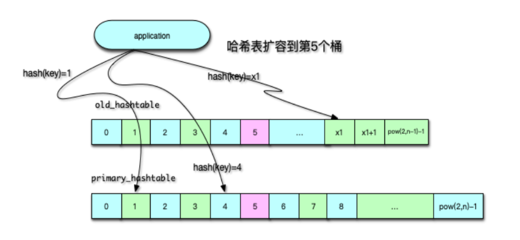
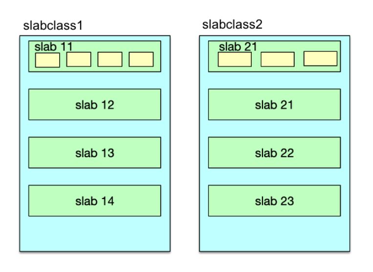

- 00 开篇寄语：缓存，你真的用对了吗？.md.html
- 01 业务数据访问性能太低怎么办？.md.html
- 02 如何根据业务来选择缓存模式和组件？.md.html
- 03 设计缓存架构时需要考量哪些因素？.md.html
- 04 缓存失效、穿透和雪崩问题怎么处理？.md.html
- 05 缓存数据不一致和并发竞争怎么处理？.md.html
- 06 Hot Key和Big Key引发的问题怎么应对？.md.html
- 07 MC为何是应用最广泛的缓存组件？.md.html
- 08 MC系统架构是如何布局的？.md.html
- 09 MC是如何使用多线程和状态机来处理请求命令的？.md.html
- 10 MC是怎么定位key的.md.html
- 11 MC如何淘汰冷key和失效key.md.html
- 12 为何MC能长期维持高性能读写？.md.html
- 13 如何完整学习MC协议及优化client访问？.md.html
- 14 大数据时代，MC如何应对新的常见问题？.md.html
- 15 如何深入理解、应用及扩展 Twemproxy？.md.html
- 16 常用的缓存组件Redis是如何运行的？.md.html
- 17 如何理解、选择并使用Redis的核心数据类型？.md.html
- 18 Redis协议的请求和响应有哪些“套路”可循？.md.html
- 19 Redis系统架构中各个处理模块是干什么的？.md.html
- 20 Redis如何处理文件事件和时间事件？.md.html
- 21 Redis读取请求数据后，如何进行协议解析和处理.md.html
- 22 怎么认识和应用Redis内部数据结构？.md.html
- 23 Redis是如何淘汰key的？.md.html
- 24 Redis崩溃后，如何进行数据恢复的？.md.html
- 25 Redis是如何处理容易超时的系统调用的？.md.html
- 26 如何大幅成倍提升Redis处理性能？.md.html
- 27 Redis是如何进行主从复制的？.md.html
- 28 如何构建一个高性能、易扩展的Redis集群？.md.html
- 29 从容应对亿级QPS访问，Redis还缺少什么？.md.html
- 30 面对海量数据，为什么无法设计出完美的分布式缓存体系？.md.html
- 31 如何设计足够可靠的分布式缓存体系，以满足大中型移动互联网系统的需要？.md.html
- 32 一个典型的分布式缓存系统是什么样的？.md.html
- 33 如何为秒杀系统设计缓存体系？.md.html
- 34 如何为海量计数场景设计缓存体系？.md.html
- 35 如何为社交feed场景设计缓存体系？.md.html
- 捐赠
08 MC系统架构是如何布局的？
你好，我是你的缓存老师陈波，欢迎你进入第 8 课时“Memcached 系统架构”的学习。
系统架构
我们来看一下 Mc 的系统架构。
如下图所示，Mc 的系统架构主要包括网络处理模块、多线程处理模块、哈希表、LRU、slab 内存分配模块 5 部分。Mc 基于 Libevent 实现了网络处理模块，通过多线程并发处理用户请求；基于哈希表对 key 进行快速定位，基于 LRU 来管理冷数据的剔除淘汰，基于 slab 机制进行快速的内存分配及存储。

系统架构
Mc 基于 Libevent 开发实现了多线程网络模型。Mc 的多线程网络模型分为主线程、工作线程。这些线程通过多路复用 IO 来进行网络 IO 接入以及读写处理。在 Linux 下，通常使用 epoll。通过多路复用 IO，特别是 epoll 的使用，Mc 线程无须遍历整个被侦听的描述符集，只要在被通知后遍历 Ready 队列的描述符集合就 OK 了。这些描述符是在各项准备工作完成之后，才被内核 IO 事件异步通知。也就是说，只在连接做好准备后，系统才会进行事件通知，Mc 才会进行 I/O 操作。这样就不会发生阻塞，使 Mc 在支持高并发的同时，拥有非常高的 IO 吞吐效率。
Mc 除了用于 IO 的主线程和工作线程外，还用于多个辅助线程，如 Item 爬虫线程、LRU 维护线程、哈希表维护线程等，通过多线程并发工作，Mc 可以充分利用机器的多个核心，实现很好的网络 IO 性能和数据处理能力。
Mc 通过哈希表即 Hashtable 来快速定位 key。数据存储时，数据 Item 结构在存入 slab 中的 chunk 后，也会被存放到 Hashtable 中。同时，Mc 的哈希表会在每个桶，通过 Item 记录一个单向链表，以此来解决不同 key 在哈希表中的 Hash 冲突问题。 当需要查找给定 key 的 Item 时，首先计算 key 的 Hash 值，然后对哈希表中与 Hash 值对应的 bucket 中进行搜索，通过轮询 bucket 里的单向链表，找到该 key 对应的 Item 指针，这样就找到了 key 对应的存储 Item，如下图所示。

正常情况下，Mc 对哈希表的插入、查找操作都是在主表中进行的。当表中 Item 数量大于哈希表 bucket 节点数的 1.5 倍时，就对哈希表进行扩容。如下图所示，扩容时，Mc 内部使用两张 Hashtable，一个主哈希表 primary_hashtable，一个是旧哈希表 old_hashtable。当扩容开始时，原来的主哈希表就成为旧哈希表，而新分配一个 2 倍容量的哈希表作为新的主表。扩容过程中，维护线程会将旧表的 Item 指针，逐步复制插入到新主哈希表。迁移过程中，根据迁移位置，用户请求会同时查旧表和新的主表，当数据全部迁移完成，所有的操作就重新回到主表中进行。

LRU 机制
Mc 主要通过 LRU 机制，来进行冷数据淘汰的。自 1.4.24 版本之后，Mc 不断优化 LRU 算法，当前 Mc 版本已默认启用分段 LRU 了。在启用分段 LRU 之前，每个 slabclass id 只对应一个 COLD LRU，在内存不足时，会直接从 COLD LRU 剔除数据。而在启用分段 LRU 之后，每个 slabclass id 就有 TEMP、HOT、WARM 和 COLD 四个 LRU。
如下图所示，TEMP LRU 中 Item 剩余过期时间通常很短，默认是 61 秒以内。该列队中的 Item 永远不会发生在队列内搬运，也不会迁移到其他队列。在插入新 key/value 时，如果 key 的剩余过期时间小于 61 秒，则直接进入 TEMP LRU。后面，在必要时直接进行过期即可。这样避免了锁竞争，性能也更高。

对于 HOT LRU，内部不搬运，当队列满时，如果队尾 Item 是 Active 状态，即被访问过，那么会迁移到 WARM 队列，否则迁移到 COLD 队列。
对于 WARM LRU，如果队列的 Item 被再次访问，就搬到队首，否则迁移到 COLD 队列。
对于 COLD LRU，存放的是最不活跃的 Item，一旦内存满了，队尾的 Item 会被剔除。如果 COLD LRU 里的 Item 被再次访问，会迁移到 WARM LRU。
slab 分配机制
一般应用系统的内存分配是直接采用 malloc 和 free 来进行分配及回收的。长时间运行后，内存碎片越来越多，严重增加系统内存管理器的负担。碎片的不断产生，不仅导致大量的内存浪费，而且碎片整理越来越复杂，会导致内存分配越来越慢，进而导致系统分配速度和存储效率越来越差。Mc 的 slab 分配机制的出现，碎片问题迎刃而解。下面我们来先简单了解一下 Mc 的 slab 分配机制。
Mc 通过 slab 机制来分配管理内存的，如下图所示。可以说，slab 分配机制的使用，是 Mc 分配及存储高性能的关键所在。在 Mc 启动时，会创建 64 个 slabclass，但索引为 0 的 slabclass 做 slab 重新分配之用，基本不参与其他 slabclass 的日常分配活动。每个 slabclass 会根据需要不断分配默认大小为 1MB 的 slab。
每个 slab 又被分为相同大小的 chunk。chunk 就是 Mc 存储数据的基本存储单位。slabclass 1 的 chunk size 最小，默认最小 chunk 的大小是 102 字节，后续的 slabclass 会按照增长因子逐步增大 chunk size，具体数值会进一步对 8 取整。Mc 默认的增长因子是 1.25，启动时可以通过 -f 将增长因子设为其他值。比如采用默认值，slabclass 1 的 chunk size 是 102，slabclass 2 的 chunk size 是 102×1.25，再对 8 取整后是 128。

Mc slab 中的 chunk 中通过 Item 结构存 key/value 键值对，Item 结构体的头部存链表的指针、flag、过期时间等，然后存 key 及 value。一般情况下，Item 并不会将 chunk 填满，但由于每个 key/value 在存储时，都会根据 kev/value size，选择最接近的 slabclass，所以 chunk 浪费的字节非常有限，基本可以忽略。
每次新分配一个 slab 后，会将 slab 空间等分成相同 size 的 chunk，这些 chunk 会被加入到 slabclass 的 freelist 中，在需要时进行分配。分配出去的 chunk 存储 Item 数据，在过期被剔除后，会再次进入 freelist，供后续使用。
© 2019 - 2023 Liangliang Lee. Powered by gin and hexo-theme-book.